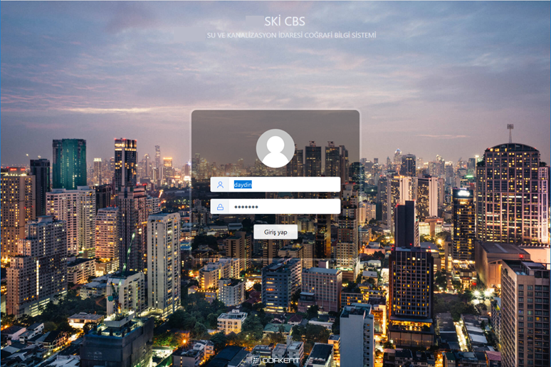

ODAGIS+™ yazılımı esas itibari ile "kurumsal" coğrafi bilgi sistemi altyapısına sahip bir yazılımdır. Bu özelliği ile diğer CBS yazılımlarından farklılık arz etmektedir. Hazırlanan farklı CBS haritaları yönetici arayüzünden web ve mobil yayına açılabilmektedir. Web arayüzünün temel özellikleri aşağıda verilmektedir:
- CBS Web sayfası, masaüstü web, farklı boyuttaki mobil cihazların tümünde çalışacak şekilde kendiliğinden ayarlı(responsive) arayüz tasarımına sahiptir.
- Kullanıcı adı ve şifre ile CBS Web sayfasına giriş yapılabilmektedir. İdare'nin bilişim altyapısında kullanılmakta olan LDAP-Hafifletilmiş Dizin Erişim Protokolü'ne entegre kullanıcı yönetimi yapılabilmektedir.
- Masaüstü CBS yazılımı ile bütünleşik çalışmakta, masaüstü CBS yazılımında kaydedilmiş sorgular CBSWeb haritası üzerinde de görüntülenebilmektedir.
- Önceden kaydedilmiş sorgular tablo, grafik ve tematik harita olarak birlikte gösterilebilmektedir.
- Ekran renk ve stil görsellik ayarları her kullanıcı için özelleştirilebilmektedir.
- Kullanıcıların yetkilerine göre grafik ortam üzerinden sözel bilgiler güncellenebilmektedir.
- Yetkilendirmeye bağlı olarak Sayısal Dökümanlar (fotoğraf, dosya vb.) spatial objelere bağlanabilmekte, objelerden silinebilmekte veya güncellenebilmektedir.
- Spatial objelerin sözel bilgilerine göre sorgulama yapılarak objelere konumsal olarak ulaşılabilmektedir.
- Kurumsal CBS veritabanında ve bilinen Web arama motorlarında kelime ve koordinat ile arama yapılabilmektedir.
- Google, Bing, OpenStreet Map vb. açık web haritaları ile kurama ait uydu, ortofoto, halihazır haritalar altlık olarak görüntülenebilmektedir.
- Aktif Koordinat Referans Sistemine göre Koordinat gösterme, Mesafe ve alan ölçme fonksiyonları mevcuttur.
- CBS Web ortamından genel harita çıktısı alınabilmektedir.
- Yetkilendirmeye bağlı olarak Coğrafi katman veya objeler Google Earth veya Excel yazılımlarına export edilebilmektedir.
